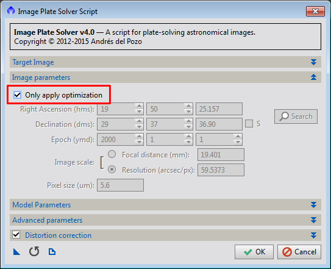

1 Introduction
[hide]
The objective of ManualImageSolver is to solve the coordinates of images that ImageSolver can not solve. The script ImageSolver is able to find the coordinates of an astronomical image without more user interaction than a few starting parameters (approximate image center and resolution). The coordinates solution is stored in the image in keywords using the WCS convention [1] [2].
ImageSolver works well with clean images of medium/high resolution. However images with too much noise or a wide field are much harder to solve and sometimes ImageSolver can not do it.
ManualImageSolver is able to find the coordinates of astronomical images that can not be solved by ImageSolver. This script uses a group of control points defined by the user that match points in the image that is being solved (Target image) with the corresponding point in an image with known coordinates (Reference image). Given enough control points the script can determine the coordinates of the image with quite good precision. This script can support images with strong distortions.
2 Usage
[hide]
This script is used in three steps:
- Creation of the reference image.
- Creation of the control points using the process DynamicAlignment.
- Execution of ManualImageSolver.
2.1 Reference image
ManualImageSolver requires a reference image that covers completely the target image. This image should be of good quality, it must have enough stars in the entire area of the target image and it must have a high quality coordinates solution. Although a real image can be used, the best results are achieved using a synthetic image generated using CatalogStarGenerator. CatalogStarGenerator can easily generate a good quality image of any part of the sky.
These are a few suggestions for generating the reference image:
- Use a resolution (or focal length) not too different to the target image. A factor of 2 should be good enough. i.e. if the target image has an estimated resolution of 2 sec/pix, the reference image should have a resolution between 1 and 4.
- The reference image must contain the entire target image. It doesn't mind that the reference image is bigger than the target, but the reference must cover the entire target.
- Chose a suitable projection for the image. For most images the Gnomonic projection is the best one. For very short focal length images (i.e. all-sky cameras, fisheye lenses) Orthographic or Zenithal Equal Area could be better.
- For wide field images the best catalog in CatalogStarGenerator is "BrightStars". This catalog contains most stars with magnitude up to 7.
- For higher resolution images the catalog PPMXL can be used, although it is necessary to filter the maximum magnitude to adapt it to the magnitude of the image. It is important to know that PPMXL shouldn't be used for wide field images because it doesn't contain some bright stars and the downloads are very slow for big areas.
- The script AnnotateImage can be used for drawing lines or labels that simplify the recognition of the stars in the synthetic image. For example, for wide field images is useful to draw the constellation lines on the reference image. This should be done so that the markings don't interfere with the star detection of DynamicAlignment: you can not set a control point on a star if it is covered by a label or line.
2.2 Control points
The control points are pairs of points in the reference and target images that correspond to the same coordinates, usually the same star. The control points can be defined using the process DynamicAlignment. After opening the reference and target images in PixInsight you have to launch the process DynamicAlignment. The reference image must be selected as "Source" (first) and the target image as the "Target" (second). The process of selecting the control points is this:
- Identify the same star in both images.
- Click in the position of the star in the reference image.
- Find the position of the new control point in the target image and move it to the position of the star.
Identifying the same star in both images is perhaps the hardest part of the process. Fortunately, after two or three control points have been set DynamicAlignment can predict the approximate position of the control points in the target image. Because of this, only the two first points are really difficult to match in both images. After them, the rest of points can be matched using the prediction of DynamicAlignment and some common sense.
After selecting enough control points you have to save the DynamicAlignment process to a process icon. This is done dragging the triangle at the lower left corner of the interface window to the workspace.
These are a few suggestions for selecting the control points:
- You should select control points covering the entire image. There should be control points near the corners of the image.
- The quality of the solution depends on the number of control points and their quality. The necessary number of control points depends on the strength of the distortion of the image: An image with no distortion can be solved with only three control points although it is better to use more control points. An image with strong distortions can require 40 or more control points.
- If the image has much noise it is advisable to select more control points.
- After selecting the first two control points, DynamicAlignment tries to predict the position of the control point in the target image. Sometimes this prediction fails and it selects a wrong position. You have to be aware of this, check every control point and move them to the correct position when necessary.
- The script can not detect if any of the control points has a wrong position (i.e. a star misidentified in one of the images). This case can be detected analyzing the residuals image that the script can optionally generate (see Generate residuals image). If a control point is wrong, its residuals (red line in the residuals image) will be much greater than the residuals of the rest of the points. After identifying the misplaced control point, you can fix (or delete) it and rerun the script.
2.3 Execution of ManualImageSolver
As the final step you have to run the script ManualImageSolver. This script analyzes the control points and the reference image and calculates a solution for the coordinates of the target window.
ManualImageSolver works on the active window in PixInsight. When you run the script it shows its configuration dialog:
-
Control points icon
-
This parameter shows a list of the DynamicAlignment icons available in the workspace. You have to select the icon that contains the control points that you want to use for solving the image. This icon can be created using the process explained in the section Control points.
-
Reference image
-
This parameter shows a list of all the images open in PixInsight that have coordinates defined. You should select the image that was used for creating the control points icon or one with exactly the same geometry and coordinates.
-
When this option is selected the script generates an image which shows the residuals of the solution. The image shows as green crosses the predicted position of the control points using the calculated solution. Red lines from each control point join the predicted position to the actual position marked by the user.
This image can be used to analyze the errors of the solution. In a good solution all the red lines should be very short (in a perfect solution the lines should have degenerated to points). When there is a control point with misplaced position its red arrow is much longer than the rest of control points.
-
This parameter activates the distortion correction using surface splines. This option should be selected when the image deviates from an ideal projected image. This usually happens in images taken with focal lengths shorter than 400mm.
When this option is active the script stores the solution in the properties of the image using a non-standard format. In order to be able to use the solution in other applications, the script also computes a lineal solution (without distortion correction) and stores it in the keywords of the image in the WCS format.
The options Show distortion map and Generate residuals image can help to evaluate the quality of the distortion correction.
-
When this option is activated the script creates a new window with a representation of the distortions in the image. The new image contains a grid with arrows at the center of each cell. The arrows point to the point where the center of the cells would be located if the image didn't have optical aberrations.
This option is only enabled when the distortion correction is active.
-
The script generates a CSV archive with a distortion model that consists in a list of points and their displacement relative to an ideal image with no geometrical optical aberrations. The points used in the model are the control points, so the control points should cover the whole image for best results. The distortion model is compatible with StarAlignment and ImageSolver.
This option is only enabled when the distortion correction is active.

When the script finishes successfully, stores the coordinates in the image and the console shows the values of this solution.
The quality of the solution can be checked analyzing the value of the RMS error reported in the console, analyzing the residuals image and using AnnotationScript for drawing a grid and the position of the stars on the target image.
3 Advanced tasks
[hide]
3.1 Solution optimization
Since the process of defining the control points for ManualImageSolver is quite slow and tedious, the user usually will not want to define more than 30-40 control points. Although this number is enough for calculating a good solution for most images, the quality of the solution is not comparable to the solutions calculated by ImageSolver which can use several hundreds of samples.
The solutions calculated by ManualImageSolver can be optimized using ImageSolver. Although ImageSolver can not solve some images starting from scratch, when these images are already solved, ImageSolver can be used for further improving the solution.
After solving the image using ManualImageSolver you can run ImageSolver selecting the option "Only apply optimization" which is available at the "Image parameters" section. It is important to activate the distortion correction and set good values in the catalog filter in order to extract enough (but not too many) stars.
The possibility of optimizing the solutions using ImageSolver allows to use ManualImageSolver to get an approximate solution using only a few control points and then get a precise solution using ImageSolver.
3.2 Manual solving of many images
The process of solving images using ManualImageSolver is quite tedious because the user has to define the control points one by one. When you want to solve many images, this get old fast. This section assumes that the images have geometric distortions since ManualImageSolver is usually not necessary for undistorted images.
There are several strategies than can be used for accelerating this process. The next sections explain them, from the fastest/easiest to the slowest.
3.2.1 Method 1 - Distortion model
Both ImageSolver and ManualImageSolver can generate distortion models for solved images. The distortion models can be used in ImageSolver for assisting in the process of matching the stars of the image against a catalog. This allows ImageSolver to solve images that it would not be able to solve without a distortion model.
You can use in an image the distortion model generated from another when both have been taken with the same equipment and parameters: same camera, lenses/telescope, focal length and aperture.
When you need to manually solve many images taken with the same optical system, you can use distortion models to speed up the process.
First you have to create the distortion model. The documentation of ImageSolver has a section describing how to generate a distortion model.
When you have a good distortion model, the images can be solved using the following procedure:
- Launch the script ImageSolver.
- Configure the Image parameters section the best you can. You can use the focal or resolution of the image that you solved for generating the distortion model. The center can be estimated using a star chart.
- Configure the catalog, magnitude, star sensitivity and distortion correction following the instructions of ImageSolver.
- In the field Distortion model select the path of the distortion model.
- Press Ok for solving the image. If everything works, the script should solve the target image successfully.
There are a few tests that can be done for checking if the solution is correct:
- You can analyze the distortion map that ImageSolver generates. It should be nearly identical to the distortion map image that you got when you generated the distortion model.
- You can also analyze the residuals image. There should be detected stars (green crosses) across the entire image and the residuals must be small (very short red lines from the center of the green crosses). When the residuals are large (long red lines) or there are few detected stars the solution is probably wrong.
- The two previous tests are probably enough, although you can also use AnnotateImage to mark the position of known features on the image.
If an image can not be solved using this method you can use the second method.
3.2.2 Method 2 - Distortion model and a few control points
This method is very similar to the previous one but it needs more work. It requires to get a distortion model the same way as explained in the previous section.
For each image you have to do this:
- Using DynamicAlignment and ManualImageSolver solve the image using 4-5 control points. This produces an approximate solution of very low precision. Although this requires some effort, this is much faster than generating the 30-40 control points necessary for a good solution.
- Launch ImageSolver. Since the target image is already solved, the dialog fills its "Image Parameters" section using the values already stored in the image. This sets a very good starting point for the algorithm and it is much more probable that it can find a solution.
- Configure the rest of parameters (catalog magnitude, star sensitivity, distortion correction) and select the distortion model.
- Press Ok for solving the image. If everything works, the script should solve the target image successfully.
If the solver finishes without errors you can check the quality of the solution the same way as the previous method (distortion map, residuals image, annotation).
If this method can not still solve any of the images you have to use the next method on them.
3.2.3 Method 3 - Manual solve and optimize
This method consists in calculating a medium precision solution using ManualImageSolver and then optimizing the solution with ImageSolver:
- Create a DynamicAlignment icon with enough control points to get fair approximation to the solution. Usually you would need (depending on the distortions of the image) about 15-30 points.
- Launch ImageSolver and select the option "Only apply optimization".
Even if ImageSolver still could not solve the image, the first step (ManualImageSolver) has already calculated a solution good enough for most purposes. In this extreme case you could add more control points to ManualImageSolver for improving the solution.
4 Algorithm
[hide]
The algorithm of ManualImageSolver is this:
- The script reads the control points from the DynamicAlignment icon. For each point it gets the pixel coordinates of the same star in both images.
- Using the solution of the reference image it converts for each control point the pixel coordinates to AR/Dec coordinates.
- Now for each control point it has the celestial coordinates and the pixel coordinates in the target image.
- The script computes an approximation to the celestial coordinates of the center of the image and creates a projection with origin at the center of the image. The projection used is of the same class (Gnomonic, Orthographic, etc) as the projection of the reference image.
- Then it projects the celestial coordinates of the control points using the projection to a flat space (we can call it G).
- If the distortion correction is active, it computes a pair of surface splines that transform the pixel coordinates of the control points to G. If the distortion correction is not active, it computes a linear transformation matrix using multiple linear regression.
- The projection and the splines (or transformation matrix) define a solution. Since it used an approximation of the celestial coordinates of the center of the image, the solution is not optimal yet.
- The solution is refined calculating a new approximation to the center of the image using the new solution. The steps 5-7 are repeated until it converges.
5 Limitations
[hide]
ManualImageSolver has the following limitations:
- ManualImageSolver can not solve with precision images that are the result of the stitching of a mosaic if this has not be done preserving the geometric characteristics of the original images. Mosaics can have jumps result of a sloppy join of two tiles and usually don't preserve the capability of be modelled by any supported projection.
- The result is as good as the quality of the control points used in the process. If the control points are misplaced or don't cover the entire image the result won't be correct.
References
[1] E. W. Greisen, M. R. Calabretta (2002) Representations of World Coordinates in FITS, Astronomy & Astrophysics, 395, 1061-1075
[2] M. R. Calabretta, E. W. Greisen (2002) Representations of Celestial Coordinates in FITS, Astronomy & Astrophysics, 395, 1077-1122
Copyright © 2013-15, Andrés del Pozo